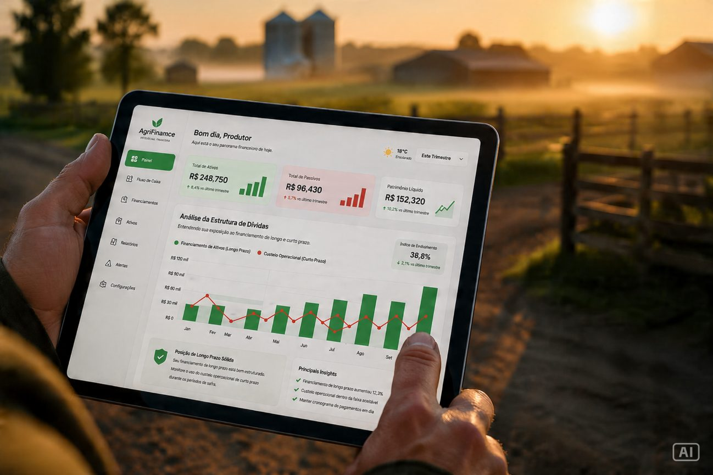

Análises para quem decide no campo
Estrutura de capital, M&A, valuation, reestruturação, captação e sucessão — explicados pelo lado de quem produz. Sem jargão desnecessário, direto ao que muda no caixa da sua operação.
O que é uma boutique financeira (e por que não é a mesma coisa que banco ou contador)
Banco vende produto, contador registra o passado. Entre os dois existe um espaço — e é nele que uma boutique financeira independente trabalha.
O que é uma boutique financeira (e por que não é a mesma coisa que banco ou contador)
Banco vende produto, contador registra o passado. Entre os dois existe um espaço — e é nele que uma boutique financeira independente trabalha.
Antes de comprar fazenda, faça essas cinco perguntas para o vendedor
Cinco perguntas que não custam nada e filtram os problemas que só aparecem depois da assinatura.
A diferença entre lucro contábil e dinheiro no bolso (e por que isso destrói safra)
Dá para fechar o ano no lucro e não ter caixa para o custeio seguinte. Entenda por quê — sem DRE.
Sua fazenda está dando lucro? Quatro contas simples para descobrir
Quatro contas do tamanho do caderno do produtor para saber se a fazenda remunera o capital investido.
Por que o seu gerente do banco não é seu assessor financeiro (mesmo gostando dele)
Ele pode ser ótimo e, ainda assim, não ser o seu assessor. É estrutura do cargo, não caráter.
Dívida boa, dívida ruim: o critério para saber qual é qual
Dívida não é vilã. Mas há dívida que constrói e dívida que corrói — e dá para classificar cada linha do passivo.
O que muda quando o filho assume a fazenda
A transição geracional é, antes de tudo, um problema prático. O que precisa mudar nos primeiros doze meses.
Quando faz sentido pegar dinheiro no mercado em vez do banco
CRA, Fiagro, FIDC: quando a operação tem porte para captar no mercado em vez de depender só do banco.
Vender a fazenda: três sinais de que está na hora de pensar nisso a sério
Vender não é fracasso. Em certos momentos é a decisão mais inteligente — e vender em ordem vale muito mais que vender em estresse.
Cinco perguntas que você deveria fazer para qualquer consultor antes de contratar
Cinco perguntas simples separam quem trabalha para você de quem trabalha para o produto que quer te vender.
Quanto vale uma fazenda hoje — e por que três avaliações vão dar três números diferentes
Por que três avaliações da mesma fazenda dão três números diferentes — e qual delas responde à proposta que você recebeu.
CRA vencendo: as três rotas reais e o que cada uma custa
Um CRA chegando ao vencimento sem caixa para liquidar tem três rotas reais. Cada uma com prazo, custo e risco diferentes.

ReestruturaçãoO custeio que virou dívida de longo prazo: o sintoma que ninguém quer admitir
Renovar custeio safra após safra para tapar o buraco anterior é o sintoma crônico que o produtor evita olhar — e o banco prefere não ver.
Sucessão antes do inventário: por que o melhor momento é dez anos antes do que você acha
Sucessão é problema de estrutura de capital, não só de direito. E o melhor momento de tratar é cerca de dez anos antes do que se imagina.
Comprar fazenda vizinha: o checklist financeiro que vem antes do laudo agronômico
O laudo agronômico vem depois. Primeiro, o checklist financeiro que decide se o negócio é seguro de assinar.
CPR Física como garantia: por que ela vale o que vale (e quando não vale nada)
A CPR Física pode ser uma garantia sólida — ou um papel sem valor. O que separa uma da outra.
Fiagro-FII, Fiagro-FIDC ou CRA: qual estrutura cabe na sua operação
Comparação direta entre os três veículos que chegaram ao produtor médio — sem favoritismo por produto.
Entrou um fundo querendo comprar 30% — leia antes de assinar o NDA
Um fundo ou family office quer comprar uma fatia da sua operação. O que ler com atenção antes mesmo de assinar o NDA.
O custo real do crédito rural subsidiado quando você soma tudo
O crédito rural subsidiado parece barato pela taxa. Somando garantias travadas e custo de oportunidade, nem sempre é.
O M&A no agro que ninguém anuncia: a venda silenciosa
A maior parte das transações no agro não vira notícia. Acontece em silêncio, em estresse, com preço mal negociado — e dá para evitar.
Nenhum artigo encontrado para essa busca. Tente outro termo ou veja todos os artigos.